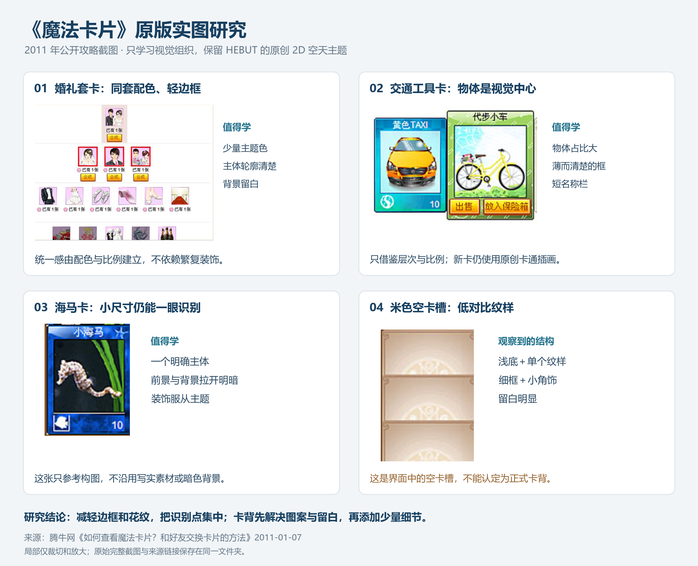

《魔法卡片》实图研究
重新对照了 2011 年的游戏截图。之前四款方案偏重花纹、徽章和天空装饰；本次从实际卡面中学习配色、比例和边框分量。

用于下一次卡背设计的约束
- 保留用户要求的 2:3 竖版和已选卡面的轮廓。早期截图中的尺寸不作为新卡尺寸标准。
- 边框使用窄描边和少量高光；删除大面积金色卷草、厚徽章和云海装饰。
- 用一个简洁原创的空天图案作为识别点，控制背景细节和重复纹样的对比。
- 深蓝用于轮廓、文字或少量重点；浅蓝与奶油色提供主要留白，避免全屏雾化渐变。
- 真实截图混有照片与插画。HEBUT 新卡继续坚持原创 2D 卡通插画，不照搬照片素材。
- HEBUT 与系列名称独立排版，边框、插画、文字分层，便于 Godot 调整。
证据限制：本次核实的是同期卡面与游戏界面。米色圆形纹样出现在空卡槽中，尚不足以证明它是正式通用卡背；不把它当作原版卡背复刻。
原始来源
如何查看魔法卡片？和好友交换卡片的方法 · 腾牛网 · 2011-01-07
QQ魔法卡片下载 · PC下载网 · 2025-09-05（页面标注时间，不能据此推定游戏版本）
参考图版权归原权利人所有。局部裁切仅用于设计分析，未做 AI 修复或重绘。未将参考素材加入可交付的 HEBUT 卡片资产。